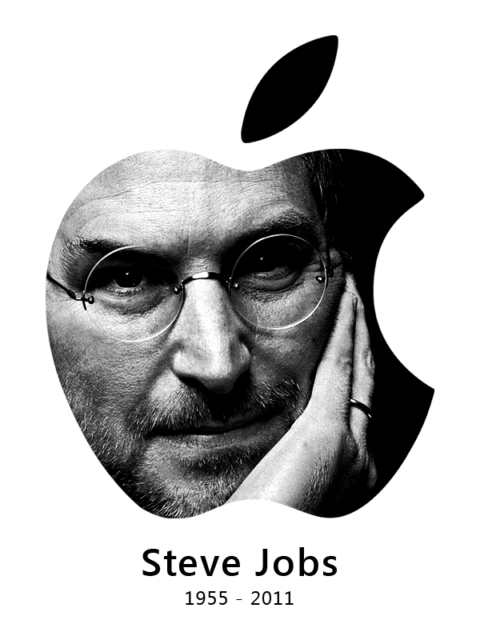
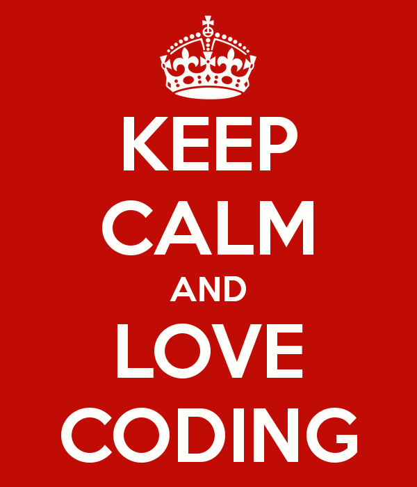

#include <programar.praque>(){
i++
Por: Fellipe Augusto Alves Gurgel

[Fonte: IDP]
Programar... Por quê?
"Everybody in this country should learn how to program a computer... because it teaches you how to think" - JOBS, Steve.
É com essa frase do nosso ilustríssimo Steve Jobs, fundador da Apple, inovador tecnológico que inspirou toda uma geração e revolucionou 6 indústrias: computadores pessoais, tablets, telefones, música, publicação digital e filmes de animação, que começamos a explicar a você, caro leitor, porque aprender a programar.
Programar nada mais é do que traduzir um passo a passo de operações para uma determinada linguagem que o computador entenda. Esse "passa-a-passo" é chamado algoritmo, uma sequência de passos para realizar uma tarefa ou resolver um determinado problema, como, por exemplo, calcular 2 + 2 .

Palmas! [Fonte: Planet4]
E por que o grande Jobs acredita que todos nós deveríamos aprender a programar?!
Sendo a favor ou não, a computação tem dominado os quatro cantos do mundo. Seres humanos estão agora dependentes de tecnologias, projetadas para facilitar nossa vida, e é aí que entramos: programando o mundo.
Ele não quer que todos desenvolvam suas próprias ferramentas para dominar o mundo... Mas sim pensar diferente, ter uma perspectiva de vida diferente. Não só ele, ou eu, mas a grande maioria dos programadores acreditamos que essa habilidade desenvolve muito mais do que aplicações que possam ajudar e facilitar a vida de alguém: desenvolvem o ser humano.
Não sei se programar pode ser considerado uma ciência, uma engenharia (David Parnas), uma arte (Donald Knuth), matemática (Edsger Dijkstra) ou se é um campo completamente novo. Particularmente, acredito ser o mais perto que podemos chegar de poderes sobrenaturais, rs!
Como nos desenvolvemos?
Quando estamos programando, o mundo e seus problemas se tornam abstratos e solúveis, e conforme essa visão vai criando forças, muda também a forma como você projeta, escreve, compila, testa e executa a vida (piada interna, rs).
Programar é exercitar como fazer a mesma coisa de diferentes maneiras e depois desenvolver um processo padrão que faça isso automaticamente. Saber pensar programando aumenta nossa capacidade de resolver problemas com mais facilidade e agilidade.
Programar é mais do que simplesmente codificar a solução de um problema, é saber abstrair e raciocinar rapidamente, capacitando os programadores a aprenderem sozinhos e com maior agilidade, na maioria dos casos.
Não se trata apenas de conhecer uma linguagem, você precisa entender também o problema que está tentando resolver. Por exemplo, em jogos geralmente precisamos entender física e dependendo do tema do jogo, genética, nutrição, eletricidade, etc. Para automatizar sistemas médicos, também precisamos saber medicina. Em redes sociais você precisa estudar como é a interação social dos seres humanos, bem como as barreiras que podem ser quebradas, e quais as tendências dessa nova forma de relacionamento, etc. Temos sempre que manter uma visão presente, passada e futura no que diz respeito à informação, seja qual for o campo de atuação ou conhecimento.

<3 [Fonte: THE KEEP CALM-O-MATIC]
Portanto, dominamos a informação, entendemos como é unificada e espalhada, criamos meios de tornar essas informações acessíveis, unir pessoas, ideais e valores. Não há como negar que em todos esses aspectos ou em qualquer outro, influencia na programação.
Outra coisa: é comum haver colaboração entre programadores, para facilitar e diminuir as responsabilidades de cada envolvido, dividindo o problema em partes. Isso se torna essencial na vida também, pois colaboração é o termo mais usado desde que inventaram a Internet, o que não é diferente no âmbito profissional. Coloque-se como um empregador, você não ficaria mais confiante com aquele candidato que menciona sua capacidade de relacionamento e colaboração em grupo?! Pois é...
A programação satisfaz aqueles que são apaixonados por ela, pois os enchem da sensação de realização quando um problema simples é resolvido. Experimente!
Então, o que precisamos para mudar o mundo?? Resposta: criatividade, imaginação, determinação, paciência, um computador barato e uma pitada de PROGRAMAÇÃO.
Referências:
Code.Org
TRANTER, Marker. Why Programming?. Prezi: novembro, 2012.
Programação de Computadores
QUILLEN, Ian. Why Programming Teaches So Much More Than Technical Skills. Mind/Shift: maio, 2013
}